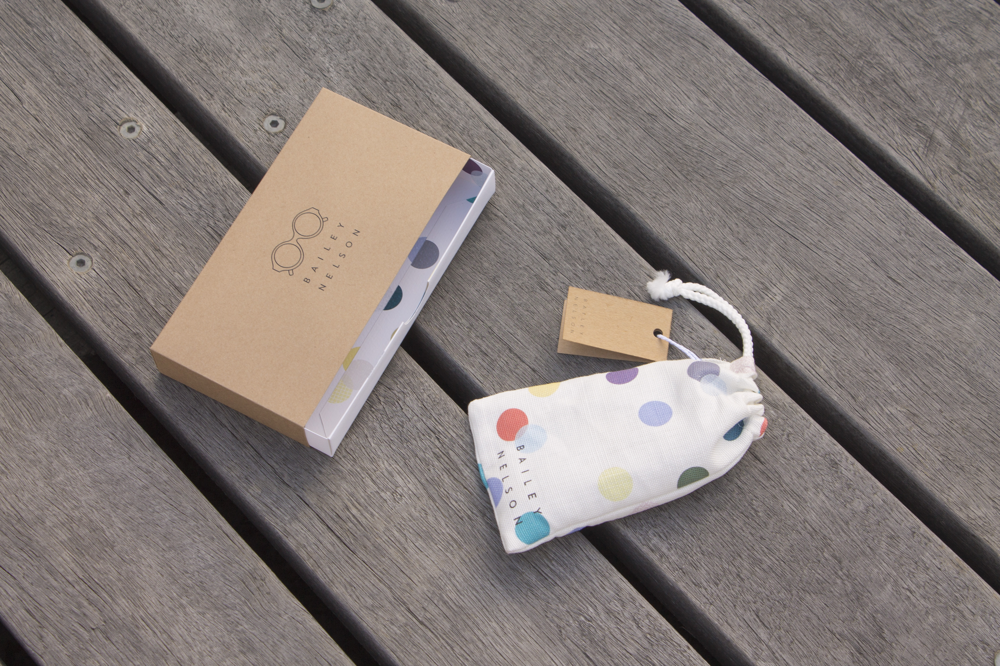

A two design screenprint series titled ‘Order Disorder’ that expresses my own artistic/personal statement. The series explores
my experimentation with mixed media, disrupting the printmaking process and letting go of my innate perfectionism and desire for clean, orderly layouts. Throughout the printing process, many issues arose that I had to learn to embrace as part of my design. Elements of the design were laid out onto the mesh just before UV exposure to create a more organic and less digitally forced composition. All textural elements in both designs have been hand-generated and then scanned in to be manipulated.
Each design is an edition of 5 printed on A2 100gsm Envirocare.


Douglas Coupland: I think the history of the world is the history of time. The future for me, growing up, was always something that was ahead. In the distance – then it started to get closer. Then it was there, and now suddenly, right now actually is the future. What we’re inhabiting is no longer in the distance anymore but in this state of very, very profoundly accelerating flux. And it’s not going to stop, you can’t take a break from it, even something as simple as not using your device for a weekend,